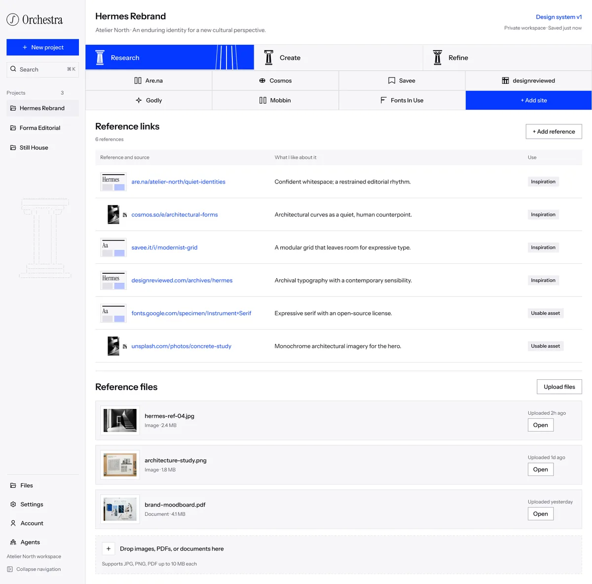

I.
Research
Start with a name, a client and a goal. Pull references from Are.na, Cosmos, Savee, designreviewed and Fonts In Use, or drop in your own files, and note what you like about each one.
- Every reference is tagged inspiration or usable asset, so licensing never gets lost
- A reference scanner extracts palette, type, mood and composition from each image
- Choose the foundations to generate first: palette, type styles, spacing, grid, components
